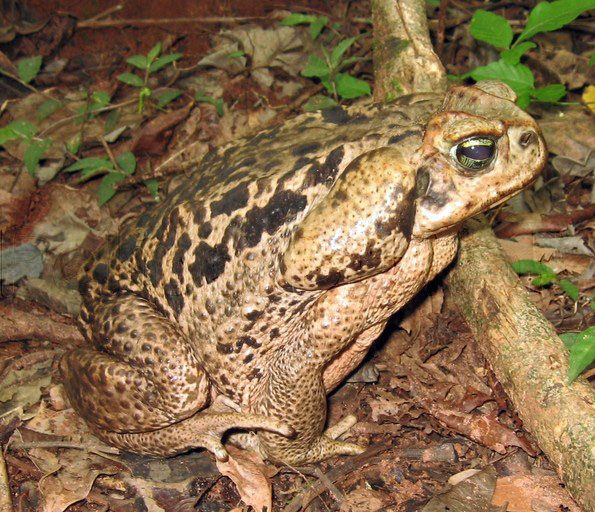
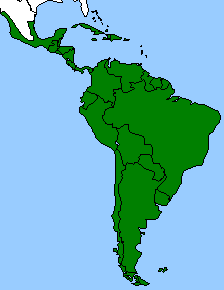

Sapo-cururu
Nome científico:(Rhinella sp. Fitzinger, 1826)
Nome comum: Sapo-cururu, sapo-boi.
Classificação biológica:
Domínio: Eukaryota.
Reino: Animalia.
Filo: Chordata.
Classe: Amphibia.
Ordem: Anura.
Família: Bufonidae.
Gênero: Rhinella.
Espécie: Rhinella sp.
Nutrição: Carnívoro.
Hábitos alimentares: Alimenta-se de insetos, aranhas, pequenos vertebrados e até mesmo outros anfíbios. É um predador oportunista, caçando principalmente à noite.
Morfologia do corpo: Possui corpo robusto, com pele rugosa e verrugosa. Mede entre 10 e 15 cm de comprimento, podendo pesar até 1 kg. Sua coloração varia entre marrom, verde e cinza, com manchas escuras.
Comportamento: É um animal noturno e terrestre, passando o dia escondido em locais úmidos e sombreados. É conhecido por sua resistência e capacidade de se adaptar a diferentes ambientes, incluindo áreas urbanas.
Principais Presas: Insetos, aranhas, pequenos vertebrados e outros anfíbios.
Principais Predadores: Cobras, aves de rapina e mamíferos carnívoros.
Locais habitados
Distribuição: Presente em todos os biomas brasileiros.
Habitat: Habita áreas úmidas, como brejos, margens de rios e lagos, e áreas florestais. Também pode ser encontrado em jardins e áreas urbanas.
Reprodução: A reprodução ocorre durante a estação chuvosa. Os machos vocalizam para atrair as fêmeas, que depositam os ovos em água parada. Os girinos eclodem após alguns dias e se desenvolvem na água.